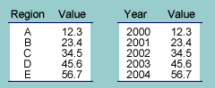
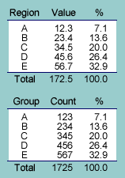

Data
The simplest type of data displayed in reports is a set of values of the same type (e.g. all crop yields or accident counts) from either different regions, different times or some other grouping (e.g. ethnic groups or gender).
Percentages
If the values in a table add to give a meaningful total, it is usually helpful to express each value as a proportion or percentage of the total. Sometimes the percentages are tabulated without the raw values.
A common type of value in such tables is a count of something (e.g AIDS cases or floods) giving a frequency table. Since the total is a meaningful global count, prercentages are usually shown.
Variations
The information in a table may be clearer if the rows are reordered, or if some categories are combined. This is particularly true for large tables.
A collection of simple tables about the same groups may be combined into a single table with several columns.